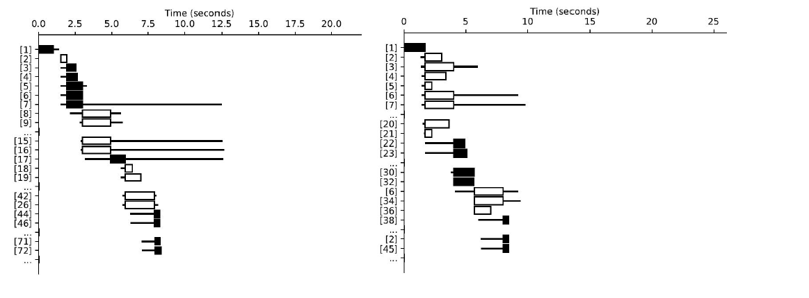
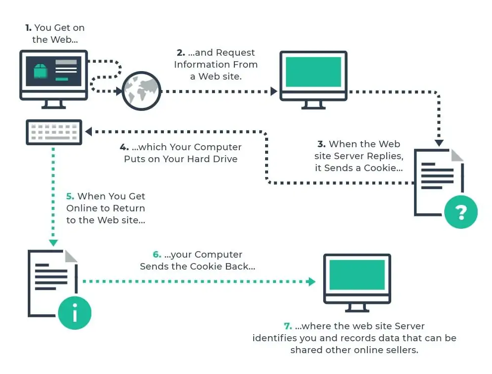
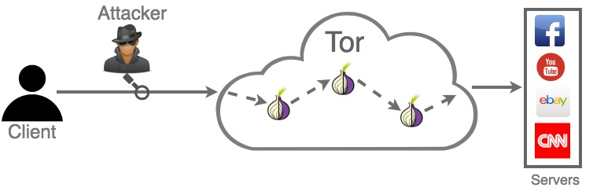

Public PrivacyAgainstInternet Censorship

Cookies are on the way out—but not enough is being done about browser fingerprinting.
The Internet's core principles such as universality of access and transparency has long begun to fade away. Groups of concerned people including Tim Berners-Lee launched recently Contract for the Web project advocates that the principles of an open web need to be safeguarded. Although no one is denied their right to full internet access, Internet censorship is on the rise. It allows a state agency to block the information flow to and from a black-listed websites. One recent approach is called Website fingerprinting attack.
It utilizes machine learning techniques to learn and identify unique traffic pattern when accessing, for example, the New York Times website. When a similar traffic pattern is observed, the attacker can block its access. However, considering the fact that the identification of such connections is not guaranteed to be accurate, it is also possible that the censor may start deteriorating the quality of service by, for example, randomly dropping packets, or throttling the traffic.
To combat against website fingerprinting attacks, many efforts have been made on improving the Tor network itself or developing ones on top of Tor. This is because Tor itself is already proven to be resilient to website fingerprinting attacks to some degree. Major media websites, such as BBC News, also adopted Tor, to ensure that their contents can be distributed to audiences without censorship.
*Website fingerprinting attack exploits the differences in traffic pattern when accessing websites (a) CNN website; (b) New York Times.
What Is Fingerprinting?
The exact configuration of lines and swirls that make up your fingerprints are thought to be unique to you. Similarly, your browser fingerprint is a set of information that's collected from your phone or laptop each time you use it that advertisers can eventually link back to you.
“It takes information about your browser, your network, your device and combines it together to create a set of characteristics that is mostly unique to you,” says Tanvi Vyas, a principal engineer at Firefox. The data that makes up your fingerprint can include the language you use, keyboard layout, your timezone, whether you have cookies turned on, the version of the operating system your device runs, and much more.
By combining all this information into a fingerprint, it's possible for advertisers to recognize you as you move from one website to the next. Multiple studies looking at fingerprinting have found that around 80 to 90 percent of browser fingerprints are unique. Fingerprinting is often done by advertising technology companies that insert their code onto websites. Fingerprinting code—which comes in the form of a variety of scripts, such as the FingerprintJS library—is deployed by dozens of ad tech firms to collect data about your online activity. Sometimes websites that have fingerprinting scripts on them don't even know about it. And the companies are often opaque and unclear in the ways they track you.
Once established, someone's fingerprint can potentially be combined with other personal information—such as linking it with existing profiles or information murky data brokers hold about you. “There are so many data sets available today, and there are so many other means to connect your fingerprint with other identifying information,” says Nataliia Bielova, a research scientist at France's National Institute for Research in Digital Science and Technology, who is currently working at the French data regulator, CNIL.
So How Bad Is It?
While there's little transparency around the companies that run fingerprinting scripts, the practice is verifiably widespread across the web. Many of the websites you visit will fingerprint your device; research from 2020 found a quarter of the world's top 10,000 websites running fingerprinting scripts.
New ways of fingerprinting are being created too. “The existing fingerprinting algorithms are not the upper boundary in terms of trackability,” says Gaston Pugliese, a research fellow at Friedrich-Alexander-Universität in Germany, who has studied the long-term impact of fingerprinting. For instance, earlier this year researchers proved they could create fingerprints of GPUs to identify people. Tracking people across different browsers is also possible.
But not all fingerprinting is bad. David Emm, a principal security researcher at Kaspersky, says the technique can often be used as a way to spot potential fraud, such as banks using it to identify suspicious behavior.
However, the widespread use of fingerprinting for targeted advertising and tracking people's online movement raises legal problems. Across Europe regulators have been calling for a clampdown on cookie banners, which appear on websites asking people if they give their permission to be tracked. The banners are so ubiquitous (and frustrating) that people largely click Accept and don't understand how they are agreeing to be tracked—that's leaving aside the fact that many cookie banners may not even do what they claim.
How Can You Stop It?
Unlike cookies, it's hard to stop fingerprinting. Cookies are stored in your browser, and it's possible to delete your cookie history, block them, or turn them off entirely. “With the fingerprinting, it's all invisible,” Emm says. “People don't know about it; they don't see it.” When the EFF first detailed fingerprinting in 2010, it said it was “akin to a cookie that cannot be deleted.”
Various browser plugins claim to help reduce or stop fingerprinting, but there's a mix in quality. A 2019 study by a researcher from Snap and two US academics found many anti-fingerprinting tools aren't that useful. The biggest thing you can do to stop fingerprinting is pick a browser that limits tracking and increases privacy.
Legal Data
Legal Aspects of such type of Internet Censorship:
1. Internet censorship laws
2. Legal and ethical issues in compliance
NICE Workforce Framework
The requirements for cybersecurity can vary widely from organization to organization. A role that can be extremely relevant to a specific business may not make sense for a smaller company or even a larger one but that works in another segment.
After going through the whole article here and completing the practical you will get some knowledge and skills that will help you to sort through some work roles which will discuss about your competency in certain aspects.
Below is a list of KS (Knowledge/Skill) provided by NICE Framework which is a part of Workforce Development by NICCS (NATIONAL INITIATIVE FOR CYBERSECURITY CAREERS AND STUDIES) which the reader here could have obtained:
| KSA ID | Knowledge |
|---|---|
| Knowledge | |
| K0001 | Knowledge of computer networking concepts and protocols, and network security methodologies. |
| K0002 | Knowledge of risk management processes (e.g., methods for assessing and mitigating risk). |
| K0003 | Knowledge of laws, regulations, policies, and ethics as they relate to cybersecurity and privacy. |
| K0004 | Knowledge of cybersecurity and privacy principles. |
| K0005 | Knowledge of cyber threats and vulnerabilities. |
| K0006 | Knowledge of specific operational impacts of cybersecurity lapses. |
| K0046 | Knowledge of intrusion detection methodologies and techniques for detecting host and network-based intrusions. |
| K0070 | Knowledge of system and application security threats and vulnerabilities (e.g., buffer overflow, mobile code, cross-site scripting, Procedural Language/Structured Query Language [PL/SQL] and injections, race conditions, covert channel, replay, return-oriented attacks, malicious code). |
| K0107 | Knowledge of Insider Threat investigations, reporting, investigative tools and laws/regulations. |
| K0110 | Knowledge of adversarial tactics, techniques, and procedures. |
| K0114 | Knowledge of electronic devices (e.g., computer systems/components, access control devices, digital cameras, digital scanners, electronic organizers, hard drives, memory cards, modems, network components, networked appliances, networked home control devices, printers, removable storage devices, telephones, copiers, facsimile machines, etc.). |
| K0118 | Knowledge of processes for seizing and preserving digital evidence. |
| K0123 | Knowledge of legal governance related to admissibility (e.g. Rules of Evidence). |
| K0125 | Knowledge of processes for collecting, packaging, transporting, and storing electronic evidence while maintaining chain of custody. |
| K0128 | Knowledge of types and collection of persistent data. |
| K0144 | Knowledge of social dynamics of computer attackers in a global context. |
| K0155 | Knowledge of electronic evidence law. |
| K0156 | Knowledge of legal rules of evidence and court procedure. |
| K0168 | Knowledge of applicable laws, statutes (e.g., in Titles 10, 18, 32, 50 in U.S. Code), Presidential Directives, executive branch guidelines, and/or administrative/criminal legal guidelines and procedures. |
| K0209 | Knowledge of covert communication techniques. |
| K0231 | Knowledge of crisis management protocols, processes, and techniques. |
| K0244 | Knowledge of physical and physiological behaviors that may indicate suspicious or abnormal activity. |
| K0251 | Knowledge of the judicial process, including the presentation of facts and evidence. |
| K0351 | Knowledge of applicable statutes, laws, regulations and policies governing cyber targeting and exploitation. |
| K0624 | Knowledge of Application Security Risks (e.g. Open Web Application Security Project Top 10 list) |
| Skill | |
| S0047 | Skill in preserving evidence integrity according to standard operating procedures or national standards. |
| S0068 | Skill in collecting, processing, packaging, transporting, and storing electronic evidence to avoid alteration, loss, physical damage, or destruction of data. |
| S0072 | Skill in using scientific rules and methods to solve problems. |
| S0086 | Skill in evaluating the trustworthiness of the supplier and/or product. |
Have a Question? Ask Us
We will get back to you